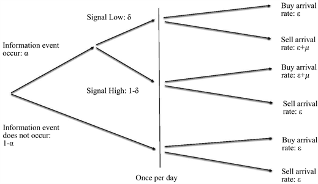
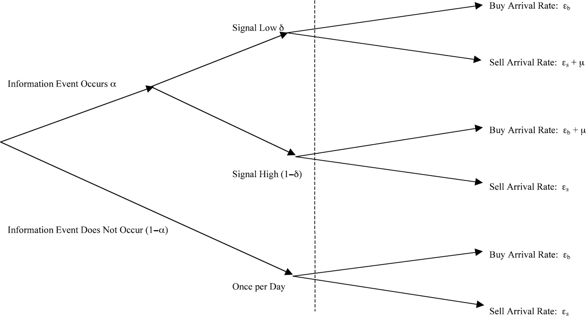

Probability of Informed Trading (PIN)#
Introduction#
In the market microstructure literature, Easley et. al. (1996) proposed a trading model that can decompose the bid-ask spread. This model introduces “Probability of Informed Trading”, or PIN, which serves as a means of measuring the informational component in the spread.
Original Easley et. al. (1996)#
Assume that the buy and sell orders of informed and uninformed traders follow independent Poisson processes, and the following tree diagram describes the entire trading process:
On each trading day, there is a probability of \(P=\alpha\) that new information will appear, and obviously a probability of \(P=(1-\alpha)\) that there will be no new information.
The probability of new information being bearish is \(P=\delta\), and the probability of it being bullish is \(P=(1-\delta)\).
If the news is bearish, the arrival rate of buy orders on that day is \(\varepsilon\), and the arrival rate of sell orders is \((\varepsilon+\mu)\).
If the news is bullish, the arrival rate of buy orders on that day is \((\varepsilon+\mu)\), and the arrival rate of sell orders is \(\varepsilon\).
When there is no new information, the arrival rate of both buy and sell orders is \(\varepsilon\).
Trading Process#
Next, assume that the market maker is a Bayesian, that is, he will update his understanding of the overall market status, especially whether there is new information on that day, by observing trades and trading rates. Suppose each trading day is independent, \(P(t)=(P_n(t), P_b(t), P_g(t))\) is the market maker’s prior probability perception, where \(n\) represents no new information, \(b\) represents bearish bad news, and \(g\) represents bullish good news, so \(P(t)=(1-\alpha, \alpha\delta, \alpha(1-\delta))\).
Let \(S_t\) be the event of a sell order arriving at time \(t\), and \(B_t\) be the event of a buy order arriving at time \(t\). Also, let \(P(t|S_t)\) be the updated probability perception of the market maker after observing a sell order arriving at time \(t\) based on the existing information. Then, according to Bayes’ theorem, if there is no new information at time \(t\) and the market maker observes a sell order, the posterior probability \(P_n(t|S_t)\) should be:
Similarly, if there is bearish information and the market maker observes a sell order at time \(t\), the posterior probability \(P_b(t|S_t)\) should be:
If there is bullish information and the market maker observes a sell order at time \(t\), the posterior probability \(P_g(t|S_t)\) should be:
Thus, the expected zero-profit bid price at time \(t\) on day \(i\) should be the conditional expectation of the asset value based on historical information and observing a sell order at this time, that is,
Here, \(V_i\) is the value of the asset at the end of day \(i\), and let the asset value be \(\overline{V}_i\) when there is positive news, \(\underline{V}_i\) when there is negative news, and \(V^*_i\) when there is no news, with \(\underline{V}_i < V^*_i < \overline{V}_i\).
At this point, the ask price should be:
Let’s associate these bid and ask prices with the expected asset value at time \(t\). Considering that the conditional expectation of the asset value at this time is:
we can write the above \(b(t)\) and \(a(t)\) as:
Thus, the bid-ask spread is \(a(t)-b(t)\), which is:
This indicates that the bid-ask spread at time \(t\) is actually:
The probability of a buy order being an informed trade times the expected loss due to the informed buyer
The probability of a sell order being an informed trade times the expected loss due to the informed seller
Therefore, the probability that any trade at time \(t\) is based on asymmetric information from informed traders is the sum of these two probabilities:
If no information event occurs (\(P_n(t)=1\)) or there are no informed trades (\(\mu=0\)), both PIN and the bid-ask spread should be zero. If the probabilities of positive and negative news are equal, i.e., \(\delta=1-\delta\), the bid-ask spread can be simplified to:
And the PIN measure is simplified to:
Model Estimation#
The parameters \(\theta=(\alpha, \delta, \varepsilon, \mu)\) are not easy to estimate because we can only observe the arrival of buy and sell orders. In this model, the daily buy and sell orders are assumed to follow one of the three Poisson processes. Although we don’t know which process it is specifically, the overall idea is: more buy orders imply potential good news, more sell orders imply potential bad news, and overall buying and selling will decrease when there is no new information. With this idea in mind, we can try to estimate \(\theta\) using the maximum likelihood estimation (MLE) method.
First, according to the trading model shown in the diagram, assume that there is bad news on a certain day, then the arrival rate of sell orders is \((\mu+\varepsilon)\), which means both informed and uninformed traders participate in selling. The arrival rate of buy orders is \(\varepsilon\), that is, only uninformed traders will continue to buy. Therefore, the probability of observing a sequence of trades with \(B\) buy orders and \(S\) sell orders in a period of time is:
If there is good news on a certain day, the probability of observing a sequence of trades with \(B\) buy orders and \(S\) sell orders in a period of time is:
If there is no new information on a certain day, the probability of observing a sequence of trades with \(B\) buy orders and \(S\) sell orders in a period of time is:
So, the probability of observing a total of \(B\) buy orders and \(S\) sell orders on a trading day should be the weighted average of the above three possibilities, and the weights here are the probabilities of each possibility. Therefore, we can write out the likelihood function:
Because days are independent, the likelihood of observing the data \(M=(B_i,S_i)_{i=1}^N\) over \(N\) days is jus the product of the daily likelihoods. Hence, the objective function of the maximum likelihood function is:
Note
The real challenge is that this function is filled with powers and factorials. Even if the time element is chosen very small, some highly liquid assets will still have hundreds of transactions within a few seconds. Therefore, either \(B!\), \(S!\), or \((\mu+\varepsilon)^B\) can cause overflow. So, further processing of the objective function here is extremely important.
Notice that in equation (16), we can extract a common factor from the three terms \(e^{-2\varepsilon}(\mu+\varepsilon)^{B+S}/(B!S!)\). Afterwards, substitute \(x\equiv \frac{\varepsilon}{\mu+\varepsilon}\in [0, 1]\) into it. The transformed likelihood function, after taking the logarithm, will be in the form:
Now, since the last term \(\ln(B!S!)\) does not affect the parameter estimation at all, it can be safely excluded. The remaining part can avoid overflow as the introduction of \(x\equiv \frac{\varepsilon}{\mu+\varepsilon}\in [0, 1]\) prevents the overflow error caused by \((\mu+\varepsilon)>1\).
Easley et. al. (2002) Model#
Easley et. al. (2002) additionally allow different arrival rates for buys \(\varepsilon_b\) and sells \(\varepsilon_s\).
The PIN measure is:
After similar steps of derivation, the likelihood function is given by
where \(\theta=(\alpha, \delta, \varepsilon_b, \varepsilon_s, \mu)\).
Model Estimation#
Many methods have been proposed to better estimate the likelihood function (20) via MLE. Here I discuss two of them, specifically, the log likelihood function after dropping the constant term.
Easley, Hvidkjaer, and O’Hara (2010)#
where \(M_i=\min(B_i, S_i)+\max(B_i, S_i)/2\), \(x_s=\varepsilon_s/(\mu+\varepsilon_s)\) and \(x_b=\varepsilon_b/(\mu+\varepsilon_b)\). The factoring of \(x_b^{M_i}\) and \(x_s^{M_i}\) is done to increase the computing efficiency and reduce truncation error.
Lin and Ke (2011)#
Lin and Ke (2011) point out that floating-point exception in computer software narrows the set of feasible solutions that maximizes the above factorized likelihood function, which in turn causes a downward bias in the estimate of PIN. They recommend the following factorization of the joint likelihood function.
where
\(e_{1i}=-\mu-S_i\ln(1+\mu/\varepsilon_s)\)
\(e_{2i}=-\mu-B_i\ln(1+\mu/\varepsilon_b)\)
\(e_{3i}=-B_i\ln(1+\mu/\varepsilon_b)-S_i\ln(1+\mu/\varepsilon_s)\)
\(e_{\max i}=\max (e_{1i},e_{2i},e_{3i})\)
Yan and Zhang (2012) further propose the set of initial values to use in MLE.
References#
Easley, Kiefer, O’Hara, and Paperman (1996), Liquidity, Information, and Infrequently Traded Stocks, The Journal of Finance, 51, 1405-1436.
Easley, Hvidkjaer, and O’Hara (2002), Is Information Risk a Determinant of Asset Returns?, The Journal of Finance, 57, 2185-2221.
Easley, Hvidkjaer, and O’Hara (2010), Factoring information into returns, Journal of Financial and Quantitative Analysis, 45, 293–309.
Lin and Ke (2011), A computing bias in estimating the probability of informed trading, Journal of Financial Markets, 14, 625–640.
Yan and Zhang (2012), An improved estimation method and empirical properties of the probability of informed trading, Journal of Banking & Finance, 36(2), 454-467.
API#
- class frds.measures.PIN(B: ndarray, S: ndarray)[source]#
Probability of Informed Trading (PIN) based on the canonical Easley et al (2002).
- __init__(B: ndarray, S: ndarray) None[source]#
- Parameters:
B (np.ndarray) –
(T,)array of buysS (np.ndarray) –
(T,)array of sells
- estimate(method='EHO2010') Parameters[source]#
Estimate PIN
As in Yan and Zhang (2012), a grid search is performed to select the best initial parameters giving the highest log likelihood.
- Parameters:
method (str, optional) – estimation method (“EHO2010”, “LK2011”). Defaults to “EHO2010”.
- Returns:
- Return type:
params
- init_params_grid_search() Generator[tuple, None, None][source]#
Yields initial parameters for MLE
The initial values are selected as in Yan and Zhang (2012).
- Yields:
Generator[tuple, None, None] – (alpha, delta, eB, eS, mu)
- class frds.measures.PIN.Parameters(alpha: float = nan, delta: float = nan, epsilon_b: float = nan, epsilon_s: float = nan, mu: float = nan, loglikelihood: float = nan, pin: float = nan, method: str = '')#
Examples#
Consider the following example buys and sells consistent with the Easley, Hvidjkaer, and O’Hara example on p. 2198 of Easley, David, Soeren Hvidkjaer, and Maureen O’Hara, 2002, “Is Information Risk a Determinant of Asset Returns?”, The Journal of Finance, 57 (5), pp. 2185-2221.
The parameters in this example would be identified as \(\varepsilon_b=\varepsilon_s=40\), \(\mu=50\), \(\alpha=0.4\), and \(\delta=0.5\).
>>> from pprint import pprint
>>> import numpy as np
>>> from frds.measures import PIN
>>> B = np.array([90, 40, 40, 40, 40])
>>> S = np.array([40, 90, 40, 40, 40])
>>> res = PIN(B, S).estimate(method="LK2011")
>>> pprint(res)
Parameters(alpha=0.4000034024442184,
delta=0.50000867584611,
epsilon_b=39.9999707607252,
epsilon_s=40.00012455827183,
mu=49.99988692576548,
loglikelihood=1485.6558133261797,
pin=0.20000080849728463,
method='LK2011')
>>> res = PIN(B, S).estimate(method="EHO2010")
>>> pprint(res)
Parameters(alpha=0.400000965289364,
delta=0.4999993508809301,
epsilon_b=40.00007364091631,
epsilon_s=40.000051685750314,
mu=49.99989185329409,
loglikelihood=1485.6558133270914,
pin=0.19999978939239277,
method='EHO2010')